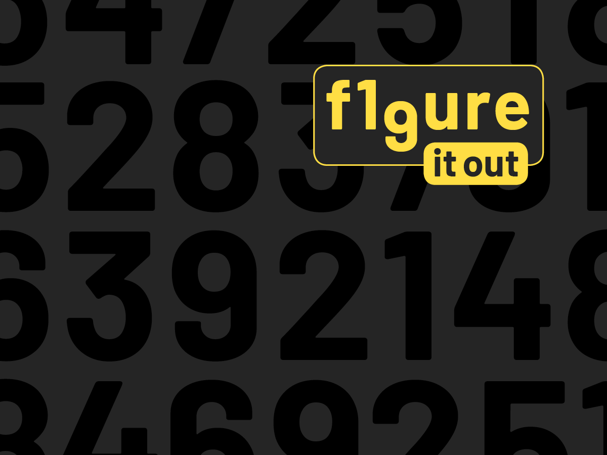
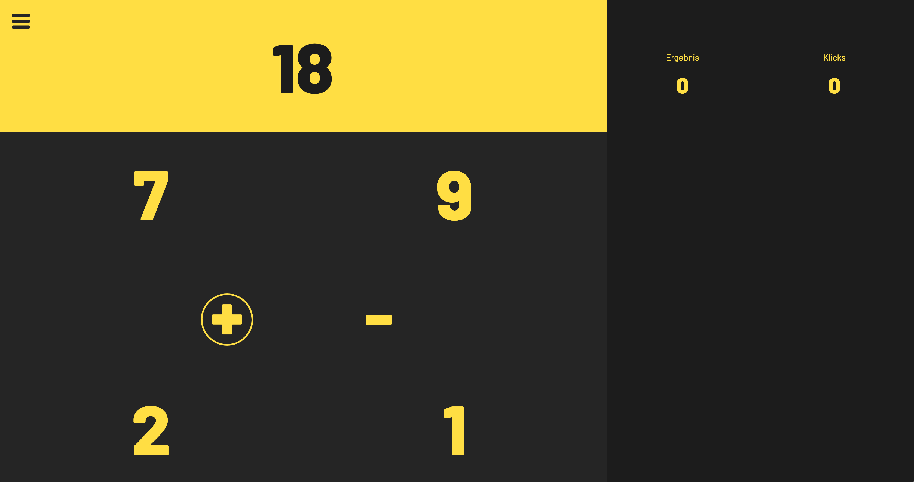
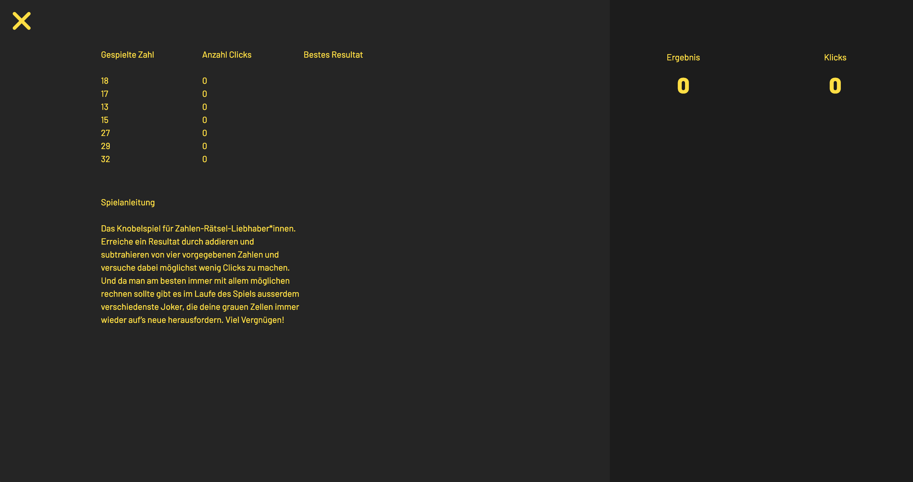
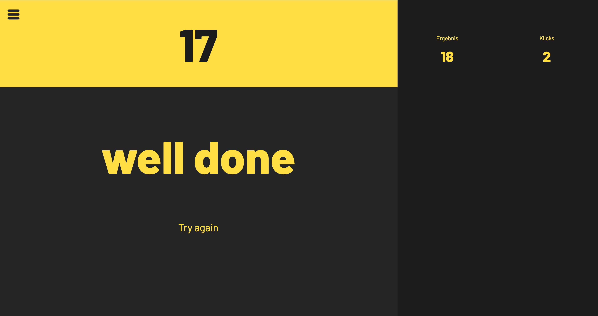

Figure it out
Das Knobelspiel für Zahlen-Rätsel-Liebhaber*innen. Erreiche ein Resultat durch addieren und subtrahieren von vier vorgegebenen Zahlen und versuche dabei möglichst wenig Clicks zu machen. Und da man am besten immer mit allem möglichen rechnen sollte gibt es im Laufe des Spiels ausserdem verschiedenste Joker, die deine grauen Zellen immer wieder auf’s neue herausfordern. Das Spiel Figure it out richtet sich an alle, die gerne auf Basis von Additionen und Subtraktionen ihre grauen Zellen trainieren möchten.

Bei dem runden basierenden Spiel geht es darum, einen vorgegebenen Wert anhand von möglichst wenigen Klicks zu erreichen. Die Herausforderung besteht dabei darin, aus den vorgegebenen vier Zahlen diejenigen zu gebrauchen, die am schnellsten das gewünschte Resultat ergeben. Dabei kann man selber entscheiden, in welcher Reihenfolge die Zahlen gerechnet und ob diese jeweils addiert oder subtrahiert werden sollen. Um das Spiel abwechslungsreicher zu gestalten gibt es ausserdem im Laufe des Spiels Joker, die zur richtigen Zeit eingesetzt die Anzahl Klicks deutlich verringern lassen.

Als Einstieg in das Spiel wurde ein Startscreen inklusive einer CSS-Animation für das Logo umgesetzt. Das im Spiel verfügbare Hamburger-Menu enthält neben einer kurzen Spielanleitung auch eine Übersicht über die aktuell verwendeten Klicks, zudem kann man dort nach jeder Runde auch nachschauen, mit wie wenige Klicks das gespielte Resultat erreicht werden könnte.

Projekt ansehen